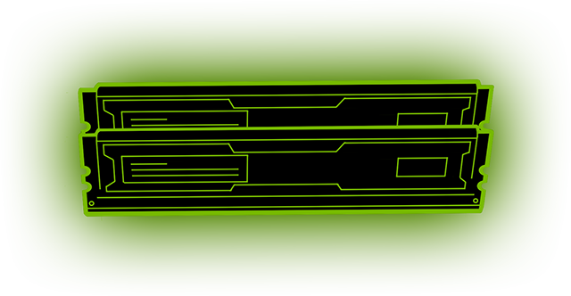

Replacing The Memory
The hardest part of replacing the memory is figuring out what memory you need. Luckily, crucial.com comes to the rescue with a simple memory scanner app for both Windows and Mac. Just download it, run it, and it’ll tell you what kind of memory your machine is running (which you can then buy from Crucial.com, of course).
To physically replace the memory, open up the case. The memory slots will be right next to the CPU. On either end of the sticks there will be white latches that you pull outwards to release the existing memory. Slotting memory back in can sometimes take a little force, so make sure you’ve got it the right way round then push down on either side next to the latches.
It should slot down into the place and the latches will come up on their own, though you may need to lock them in. If you turn the computer on and it beeps horribly, you’ve probably just not inserted them right. Check out some YouTube videos on how to replace memory before you try this, and don’t forget to touch a radiator or use an anti-static wrist strap at all times when handling the memory.